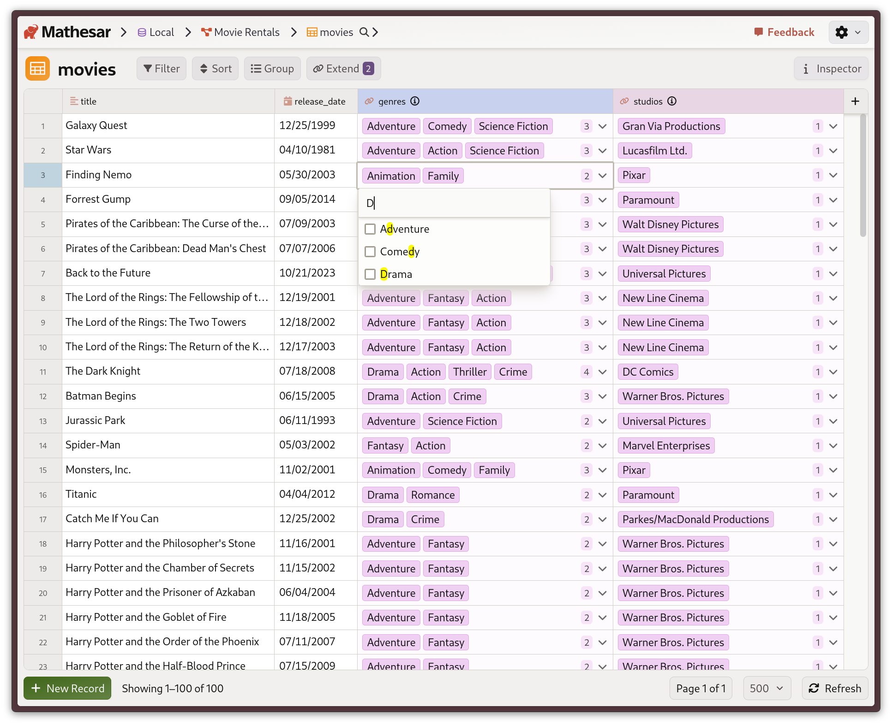
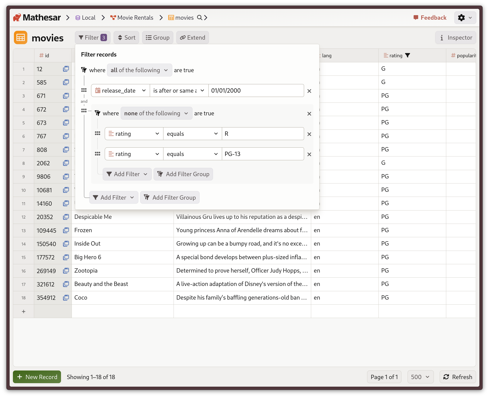
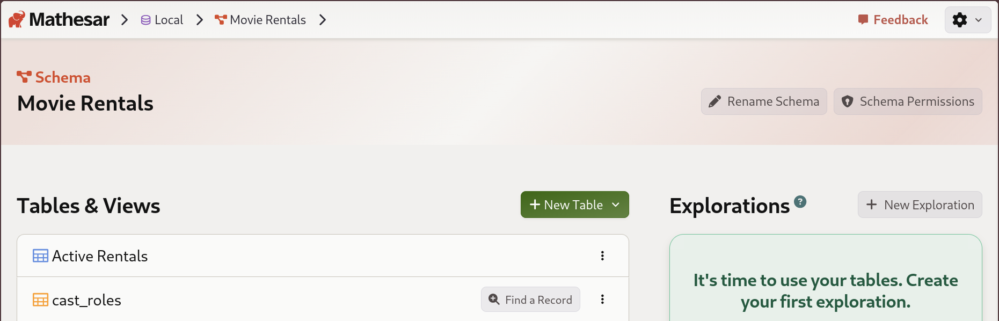
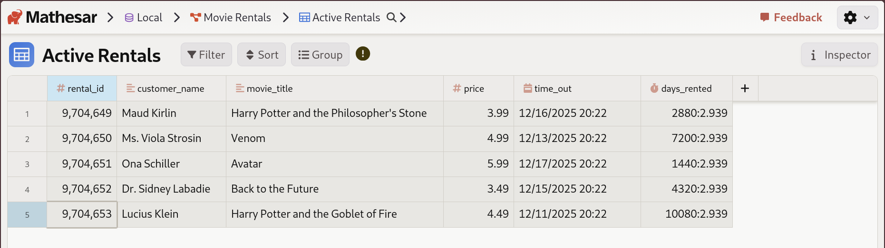
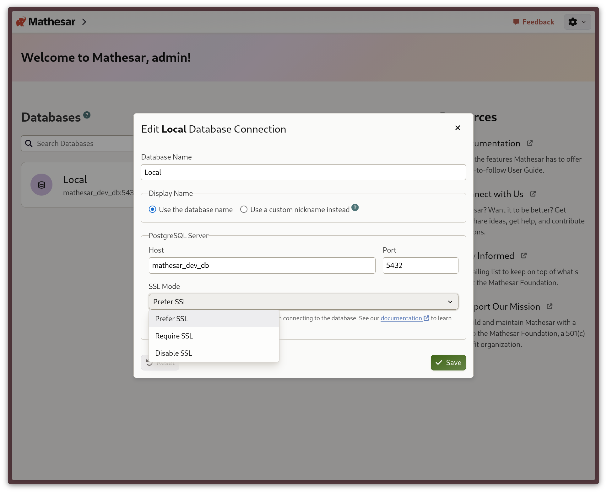
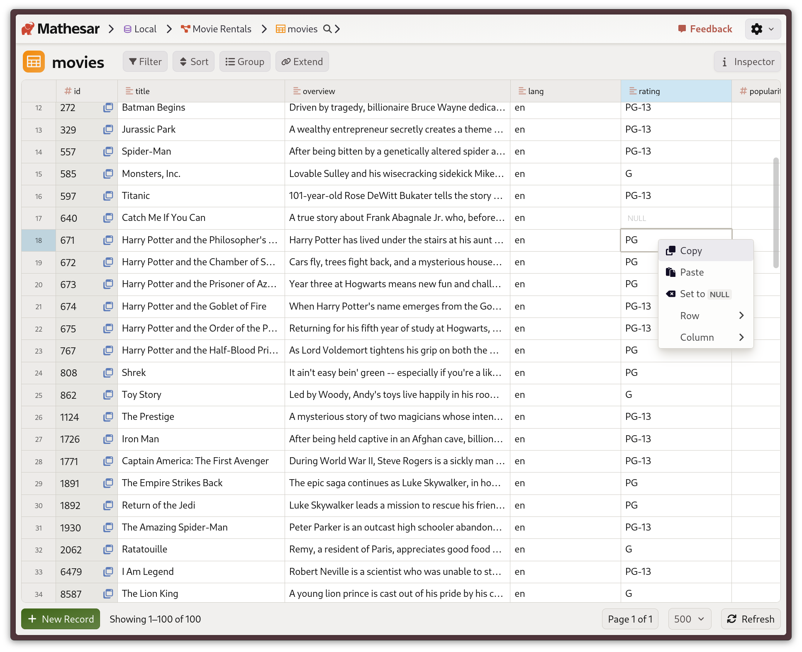
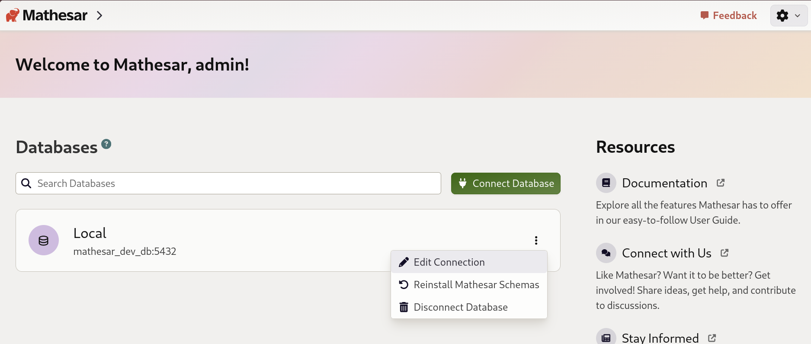

Mathesar 0.8.0¶
Summary¶
Mathesar 0.8.0 introduces the ability to edit data from multiple related tables in a single place on the table page. We’ve also added support for more precise filtering, including combining and excluding groups of filters. Additionally, PostgreSQL views set up in the database are now automatically displayed in the UI along with tables.
This release also includes usability improvements for smaller screens, a new way to access copy and paste functionality, and support for multiple SSL modes when configuring databases, as well as many other enhancements and bug fixes.
This page provides a comprehensive list of all changes in the release.
Improvements¶
Extend tables with related data¶

Extending the Movies table with genres and studios from related tables.
The table page now has an “Extend” button to display columns from some related tables alongside columns from the current table. Users can also add and remove related data by editing the related data cell.
This feature currently only supports “many to many” relationships via mapping tables that do not have any additional fields other than foreign keys. For instance, genres related to movies via a movies_genres table, or categories applied to support_tickets via a ticket_categories table.
Related work:
#5035 #4995 #5033 #4989 #4977 #4983 #4984 #4988 #5053
More powerful filtering¶

Filter for kid-friendly movies released after the year 2000.
Mathesar now supports more flexible filtering options for tables that can use complex logical expressions. You can group related conditions together and then combine those groups to support extremely precise filters.
Previously, Mathesar’s filtering only supported either a single AND or a single OR operation.
Related work:
Database views support¶

Views appear on the schema page with a distinct blue icon and at the top of the list.

View records the same way you would in tables, but with editing disabled.
PostgreSQL views that have been set up in the database now automatically appear in Mathesar. They are displayed on the schema page alongside tables with their own icon and color.
Related work:
Configurable SSL mode for database connections¶

SSL mode configuration in database settings
We’ve improved compatibility with more databases in the wild by adding support multiple for SSL modes when configuring connected databases in Mathesar. You can set up the SSL mode for the UI, or use environment variables for local database connections.
Related work:
Column-level UPDATE privilege support¶
Mathesar now allows users to edit columns if they have PostgreSQL’s column-level UPDATE privileges without having table-level UPDATE privileges. Previously, we checked for table-level privileges in all cases.
Related work:
Copy and paste in context menu¶

Copy and paste options in the cell context menu
Mathesar tables now allow users to copy and paste using the cell context menu. This also improves copy/paste support for touch-only devices where keyboard shortcuts aren’t available.
Related work:
Improved support for touch-only devices¶
We’ve added the ability to select multiple cells in the table page using a new context menu option. Additionally, we’ve made the table page status pane more responsive to narrow viewports.
Related work:
Expanded database options on the home page¶

Database management options like disconnecting databases, editing connections, and reinstalling Mathesar schemas are now available on Mathesar’s home page. Database cards also provide clearer feedback on the status of Mathesar’s internal schemas when a database is disconnected.
Related work:
Additional UI improvements¶
- Added “Delete Column” option to column context menu #4945
- Made table name under record title clickable for easier navigation #4949
- Added hyperlink to navigate to the table page from the table widget #4938
- Allow adding new columns from within the table widget #4958
- Improved keyboard navigation for breadcrumb dropdowns #4910
- Hide column type icon when column width is very narrow for better space utilization #4940
- Improved color of the Mathesar link in forms #5002
- Apply appropriate colors to new item hint #4994
- Add focus trap to the NewColumnCell dropdown for better accessibility #4953
- Allow renaming of primary key (Mathesar ID) columns #4931
- Fix SSO login page to display Authentik logo instead of generic icon #4934
Bug fixes¶
- Fix primary key recognition when column has multiple indexes #5058
- Fix error when previewing record summary if selected cell is null #5032
- Fix record summary template referencing deleted column #4956
- Fix date picker to determine the current date on open, not on page load #5031
- Fix missing error message when deleting records with foreign key constraints #5045
- Fix displayed table relationships not updating after adding a new relationship #5014
- Prevent record selector opening on Shift+click of foreign key cell chevron #5007
- Fix missing “Set to null” string in single record view field menus #4955
- Fix row hover in data explorer #4951
- Handle more edge cases when setting the user’s cursor after auto-formatting an input #4851
- Convert empty string to
Nonefor data imports to ensure proper null handling #5055 - Change default “Date & Time” column type to “timestamp without time zone” #5063
- Improve SQL error messages for better debugging #4936
- Use correct path for media files in Docker #5091
Documentation¶
- Refine Mathesar’s PostgreSQL and Python version support documentation #4881
Maintenance¶
- Remove Django REST Framework (DRF) as a dependency #5067 #5065
- Refactor table view system to use string-based column ids #4975
- Bump Django from 4.2.25 to 4.2.27 #5070 #4959
- Reinstate PostgreSQL 18 in CI #4950
- Improved SQL list_records_from_table unit tests #4991
- Add package and installation workflows to checkpoint #4941
- Updated Japanese translations #4944
Upgrading to 0.8.0¶
PostgreSQL 13 and Python 3.9 no longer supported
Mathesar 0.8.0 ends official support for PostgreSQL 13 and Python 3.9. Please upgrade to PostgreSQL 14+ and Python 3.10+ before upgrading to Mathesar 0.8.0.
For installations using Docker Compose¶
If you have a Docker compose installation, run the command below:
Your installation directory may be different
You may need to change /etc/mathesar/ in the command above if you chose to install Mathesar to a different directory.
For direct installations of Mathesar on Linux, macOS, or WSL¶
Mathesar provides an install script that automates both fresh installs and upgrades for standalone (non-Docker) installations.
Follow the steps below to upgrade Mathesar:
-
Enter your installation directory into the box below and press Enter to personalize this guide:
- Do not include a trailing slash.
- Do not use any variables like
$HOME.
-
Go to your Mathesar installation directory.
Note
Your installation directory may be different from above if you used a different directory when installing Mathesar.
-
Download and run the install script for 0.8.0
-
Replace your gunicorn systemd service with a Mathesar systemd service
-
Disable and stop the existing gunicorn service
-
Follow the steps in Run Mathesar as a systemd service from the installation guide
-
Remove the gunicorn service file
-
-
Update your Caddyfile
-
Use the configuration shown in Install and configure Caddy in the installation guide, and update your Caddyfile accordingly
-
Ensure that your domains are specified directly in the first line of the Caddyfile
-
Restart your Caddy service
-